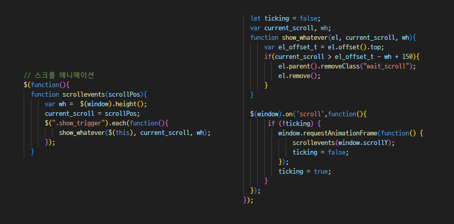

Rococo Online Art Gallery
로코코 온라인 아트 갤러리 프로젝트
기여도 : 개인 프로젝트 (100%)
제작 기간 : 10일 (디자인 4일 + 퍼블리싱 6일)
툴 : Figma, Photoshop, Visual Studio Code
Project Vision
많은 사람들이 '고전 미술'을 어렵게 느끼는 경우가 많습니다. 저는 이러한 어려운 인식 뒤에 숨겨진 아름답고 화려한 로코코 시대의 미술을 더 많은 사람들이 쉽게 접할 수 있도록 만들고 싶었습니다. 이를 위해 화려한 이미지를 강조하고, 심플한 레이아웃과 입체감을 주는 메인 이미지를 통해 시각적인 매력을 더하고자 했습니다.
- 01 스와이퍼를 이용한 심플한 레이아웃
- 02 동적인 효과를 통한입체적인 이미지 연출
Design System
Typography
Color
-
#0E0E0E
-
#FFFFFF
고급스러운 느낌을 주는 Adamina 폰트를 포인트로 사용하고, 가독성을 고려한 설명글 에는 Noto Sans Kr을 선택했습니다. 또한, 화려한 색채가 특징인 로코코 시대의 작품을 돋보이게 하기 위해 이미지 외의 컬러는 최소화하여 사용했습니다.
Publishing
스크롤 기반 이미지 크기 조정
스크롤 반응 헤더
toddleClass 활용
스크롤 반응 애니메이션

스크롤에 따라 이미지의 크기가 변화하도록 하여, 사용자가 세로로 스크롤할 때 이미지가 더욱 입체적으로 느껴지도록 연출하였습니다.
사용자가 페이지를 탐색할 때 헤더를 자동으로 숨기거나 나타내어 더 깔끔한 인터페이스를 제공하였습니다.
toggleClass를 사용하여 직관적이고 간편하게 메뉴의 상태를 제어할 수 있도록 하였습니다.
